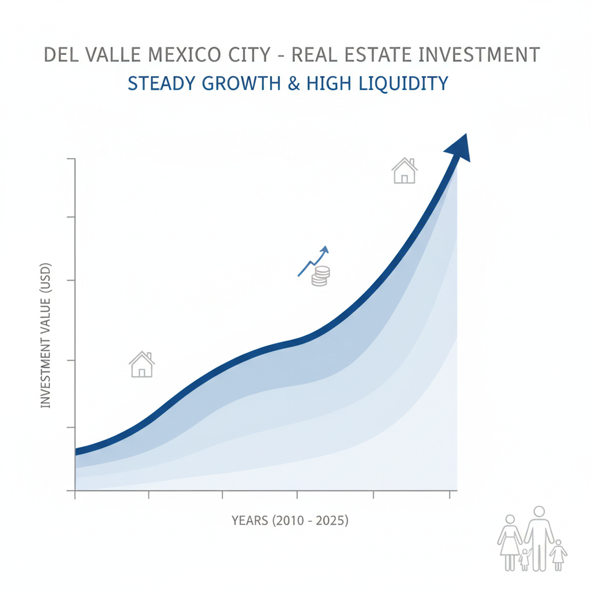

Architectural Guide 2026
Del Valle: Your Strategic Investment in Mexico City's Elite Urban Fabric
In the complex residential tapestry of Mexico City, Del Valle stands as a testament to balanced urbanism. We navigate its rigorous architectural landscape, transforming properties into resilient, lifestyle-ready assets that honor tradition while embracing the demands of 2026's discerning international investor.

The Resident Architect's View
As an architect living in Condesa, I often find myself drawn to Del Valle. It's the scent of jasmine mingling with fresh artisan bread from a local panadería on a Sunday morning, or the particular quality of light at 5 PM as it filters through the mature trees along Avenida Coyoacán, illuminating the intricate Art Deco facades. This isn't just another colonia; it's a neighborhood where the rhythms of family life and astute investment converge, an urban environment where every detail, from its meticulously maintained parks to its resilient infrastructure, speaks of a commitment to enduring quality. It's a place where I appreciate the deep history and the strategic foresight in its planning.

Erik Martínez, AIA
Principal Architect. Former SHoP Architects NYC. Bringing international precision to CDMX's most complex heritage assets.
Iconic Landmarks
- Park Tlacoquemécatl
- Metro Zapata Interchange
- Avenida Coyoacán & Adolfo Prieto (Catalogued Artistic Monuments)
Colonia Del Valle: A Legacy of Thoughtful Urbanism
Del Valle, nestled within the Benito Juárez borough, is an archetype of deliberate metropolitan evolution. Its origins in the early 20th century, shaped by a commitment to expansive, family-oriented residences and meticulously planned public spaces, have matured into a highly coveted residential corridor. While the average property price per square meter in Mexico City has solidified around ![][image1] MXN as of January 2026, Del Valle exists in a specialized sub-market where central connectivity, robust family infrastructure, and stringent zoning regulations converge to create unparalleled capital resilience and lifestyle quality.
The Architecture of Enduring Value
The outperformance of Del Valle's well-positioned apartments, projecting growth of ![][image4] to ![][image5] in 2026, is a direct consequence of its limited inventory. Rigid zoning laws, primarily designated as H/3/20 or H/4/20 (Habitacional with 3 or 4 levels and 20% permeable open space), prevent easy expansion, ensuring that modern, lifestyle-ready properties consistently command a premium. This scarcity, coupled with a cooling interest rate environment (Banxico is projected to lower rates to ![][image2] by end-2026), stimulates sustained appreciation, particularly for family-sized apartments and modern lofts.
Geotechnical Realities: Engineering for Resilience
Del Valle's geological profile is defined by its position within Zone III (Lakebed) and Zone II (Transition) classifications. The heart of the colonia, falling into Zone III, rests upon highly compressible clay deposits that can extend ![][image54] to ![][image55] meters deep. These soils are known to significantly amplify seismic waves, with a typical predominant ground period of 1.7 to 2.0 seconds. Designing luxury properties here is not merely about aesthetics; it's about engineering a structure whose natural oscillation period avoids resonance with the ground's inherent frequency.
Our approach mandates a thorough 'Mechanics of Soils' study for every project. We specialize in deep pile or compensated foundations, a critical investment given the specific characteristics of the lakebed. We bridge the rigorous engineering standards of US NCARB/AIA with the skilled execution of local maistro labor, eliminating the notorious 'Gringo Tax' by employing transparent 'cost-plus' models (typically ![][image5] to ![][image8] management fees) and benchmarking against the official labor cost of ![][image17] MXN per square meter for luxury residential builds. This ensures your investment is structurally sound and financially transparent.
Navigating Patrimonio: INBAL & INAH in Del Valle
While not a Historical Monuments Zone, Del Valle proudly preserves hundreds of Catalogued Artistic Monuments, primarily dating from the early 20th century. These are concentrated in the 'Del Valle Centro' and 'Del Valle Norte' sections, particularly on streets such as Avenida Coyoacán, Adolfo Prieto, and around Park Tlacoquemécatl. Any renovation on a catalogued property necessitates explicit approval from INBAL (Instituto Nacional de Bellas Artes y Literatura).
The aesthetic constraints are precise and unwavering. Approved 'patrimonial' color palettes are mandated for facades, preserving the neighborhood's historical visual integrity. Crucially, the replacement of original wood or iron window frames with modern white PVC is generally prohibited; instead, custom aluminum or PVC that meticulously mimics the original profile and color must be used. Furthermore, the original 'volumetría' (outer shell) cannot be altered; adding an extra floor, even if permitted by SEDUVI zoning, is often denied if it compromises the building's artistic integrity. Without an INBAL 'Visto Bueno,' work stoppage and significant fines ('Clausurado') are immediate. Our expertise lies in navigating these Heritage Hurdles to unlock the ![][image19] price premium authentic heritage homes command.
Water Autonomy: The Cutzamala Rework & Your Property's Resilience
Water security has emerged as a defining infrastructure challenge in 2026. The Sistema Cutzamala, supplying nearly ![][image19] of Mexico City's water, is undergoing a ![][image36] million peso modernization, involving the replacement of 40-year-old infrastructure. Concurrently, the mayor's office has announced a plan to reduce reliance on Cutzamala by ![][image37]. For a Del Valle property to be considered 'investment grade' in 2026, substantial autonomous storage is paramount. We recommend a minimum ![][image42] liter cistern for a 3-bedroom family unit, providing an estimated ![][image44] days of autonomy, establishing a property's 'water autonomy index' as a critical valuation metric alongside square footage.
Architectural Feasibility: Del Valle 2026
| Project Type | Avg. Permit Time | Seismic Risk Level | Conservation Status |
|---|---|---|---|
| Heritage Restoration (INBAL Catalogued Property) | 18 - 36 Months | High (Patrimonio & Zone III) | Strict (INBAL Visto Bueno) |
| New Construction (H/3/20 or H/4/20) | 12 - 24 Months | Moderate (Deep Piles & Public Space Contributions) | Rigorous (SEDUVI & DRO oversight) |
| Lifestyle Unit Interior Renovation (Non-Catalogued) | 4 - 8 Months | Low (Internal Focus) | Flexible (High-End Finishes & Tech Integration) |
Specialized Renovations: Crafting the 'Lifestyle' Unit
The demand for 'lifestyle' units in Del Valle is driven by the 'nomad layer,' prioritizing connectivity, environmental control, and transit efficiency. Our renovations integrate 100% fiber optic connections (up to ![][image34] Gbps via Totalplay) and uninterruptible power supply (UPS) systems for smart home hubs to mitigate 'micro-blackouts.' We prioritize soundproofing, utilizing multi-chambered PVC profiles and asymmetric double/triple glazing (e.g., ![][image28]mm pane, ![][image29]mm air/gas gap, ![][image30]mm pane) to combat the urban noise profile from 'gasero' trucks, Insurgentes sirens, and the ambient 'colofonía' of neighborhood commerce, ensuring a sanctuary of silence within the city.
High-End Interior Design: The Del Valle Standard
Our interior design philosophy for Del Valle focuses on creating sophisticated, family-centric spaces that cater to the exacting standards of the ultra-high-net-worth individual. We integrate bespoke millwork, advanced climate control systems, and meticulously curated material palettes to enhance the sense of spaciousness and natural light. Furnished units, catering to the transient 'nomad layer,' command a ![][image8] to ![][image9] premium, reflecting the demand for turnkey luxury that seamlessly blends local craftsmanship with international contemporary design.
The Del Valle Cheat Sheet
- Best Streets Avenida Coyoacán, Adolfo Prieto, Park Tlacoquemécatl
- Zoning Code H/3/20 or H/4/20
- Est. Cost / m² MXN ![][image17]/m² (Labor), $$1,000 - ![][image26] USD/m² (Total Luxury Build)
- Best Coffee La Vienet Pasticceria (Hypothetical local artisan bakery/cafe)
- Local Quirk The 'colofonía' (cacophony of urban sounds) is a recognized factor in architectural design, particularly concerning acoustic insulation and window specifications.

The Challenge
The primary challenge in Del Valle is orchestrating sophisticated, resilient architecture within a framework of rigorous seismic mandates, strict heritage conservation, and evolving water security paradigms. Balancing a building's 'water autonomy index' with its structural integrity and aesthetic patrimony requires an integrated, multi-disciplinary approach.
In the Benito Juárez borough, the path from design to construction is mediated by the Manifestación de Construcción (Tipo B or C). While legally 'instant' upon filing, the mandatory Publicitación Vecinal (neighborhood announcement period) can introduce delays of ![][image52] to ![][image53] days. The DRO (Director Responsable de Obra) bears full civil and criminal liability for the project's safety and adherence to building codes, making their selection and oversight paramount. Additionally, high-value properties are susceptible to a ![][image15] Income Tax (ISR) on the difference if the commercial appraisal exceeds the purchase price by more than ![][image5].
Our Solution
We specialize in constructing properties that embody 'urban resilience.' Our designs integrate substantial autonomous water storage, often exceeding ![][image57] liter cisterns for family units, and are underpinned by post-2023 structural certificates signed by reputable DROs attuned to Del Valle's Zone III sub-soil. This ensures both liquidity resilience and long-term asset protection.
We de-risk acquisition and construction for ultra-high-net-worth international investors. Our transparent 'cost-plus' model, referencing CMIC labor tables (luxury residential build: ![][image17] MXN/m²), eradicates the 'Gringo Tax.' We budget realistically for closing costs, anticipating up to ![][image13] of the purchase price, encompassing the progressive ISAI (up to ![][image14] for high-value) and the Notario Público's comprehensive role, which acts as the government's tax collector and ensures absolute title security.


Planning to Buy?
Don't sign a contract before a technical audit. We offer pre-purchase structural assessments in Del Valle.
2026 Cost Report
Get our detailed breakdown of current labor and material costs for luxury residential in CDMX.
Start Your Del Valle Legacy
NYC Precision. Mexican Craft. We eliminate uncertainty for international investors.